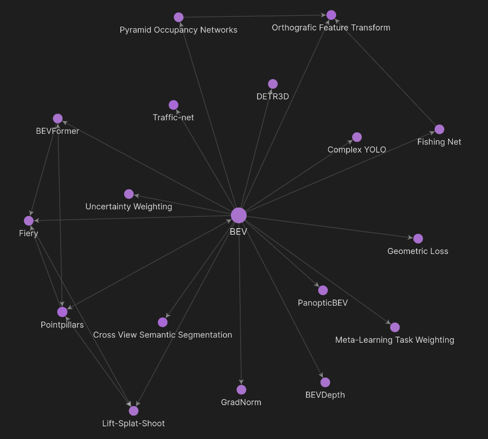
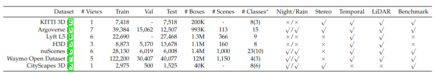
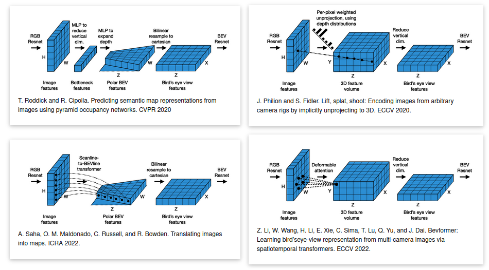

A Perspective on Birds Eye View (BEV) Networks
Why BEV Networks?
If you’ve been following advancements in 3D perception for autonomous driving, you’ve likely come across Bird’s Eye View (BEV) networks. But what are they? There are many different approaches these days, but to put it simply, a BEV network is a type of deep learning model that takes in sensor input such as images form a camera and outputs a representation of the scene from a top-down perspective. They’re becoming a go-to method for enhancing how self-driving cars “see” the world.

Shown above is one of the pioneering papers in this space, Lift-Splat-Shoot. Using inputs from six cameras of around the driving vehicle, this BEV network is able to generate a single unified representation of the surrounding vehicles.
What makes BEV so attractive? It handles three crucial symmetries:
- Translation Equivariance: Shift an image, and the output shifts along with it. Fully convolutional single- image object detectors roughly have this property and the BEV Nets inherits this from them.
- Permutation Invariance: The camera order doesn’t matter; the results are the same.
- Ego-Frame Isometry Equivariance: No matter where the camera is placed, it’ll detect the same objects in the ego frame.
By preserving these properties and being fully end-to-end differentiable, BEV networks streamline the perception process.
Understanding The BEV Landscape
Here’s the thing—I don’t have a PhD from Carnegie Mellon or MIT. For a long time, I thought breaking into such a complex field without one was intimidating. But as I progressed in my career and became more established in the automated driving industry, I realized something: being passionate about learning and sharing that journey has been my greatest asset. With this project, my goal is to show everyone, regardless of skill level, my unique perspective on BEV with the hope to inspire others to do the same.
Above is a snapshot into my BEV mind map, created with Obsidian. Using this app, I was able to gradually expand my knowledge in BEV networks, starting with the depth-based Fiery and eventually going across the main approaches discussed in this project.
Datasets That Power BEV
To get BEV networks to work, we rely on some heavyweight datasets offering diverse scenes for training and testing. Three of the big names are:
- KITTI: A well-known benchmark with over 7,500 samples for testing with both 2D and 3D annotations.
- nuScenes: A massive dataset with 1,000 scenes, each lasting 20 seconds, offering a 360-degree field of view.
- Waymo Open Dataset (WOD): One of the largest autonomous driving datasets with nearly 800 sequences for training.
Other datasets worth mentioning include Argoverse, H3D, and Lyft L5, which are also popular for testing BEV models.
Different BEV Approaches
Shown above is an illustration of four different approaches to transforming perspective view (PV) images into bird's eye view (BEV) representations. The four quadrants demonstrate (clockwise from top-left): MLP-Based, Depth-based, Learning-based
There’s no single “right” way to transform images from regular perspective view (PV) into BEV. Researchers have explored several approaches, but they generally fall into two main categories:
Geometric-Based PV2BEV
- Homography-Based: Also known as Invese Perspective Mapping. Most applications of this actually don't use neural networks, but instead applies simple geometric transformations on the sensor intrinsics and extrinsics to get a BEV-like view. This falls in the traditional realm of Robotics algorithms and has been used extensively in perception pipelines. However, this technique falls short due to the assumption that the ground is flat. While that may align to certain individuals beliefs, it can lead to inaccurate results for more advanced driving functionalities.
- Depth-Based: As the name eludes, depth based networks rely on extracting depth from image features to project 2D images into 3D space. Starting in 2019 with single image detection from OFT, depth networks had seen major developments
Notable works include Lift-Splat-Shoot, Fiery, and BEVDepth.
Network-Based PV2BEV
- MLP-Based: These models use multilayer perceptrons (MLPs) to map PV images into BEV space, learning the transformation through data.
- Transformer-Based: Transformers are becoming more popular due to their ability to handle relationships between features in a data-driven way.
Notable works include BEVFormer and PanopticBEV.
How Do We Compare These Methods?
Comparing BEV methods isn’t easy. Each approach has its strengths and weaknesses. That’s where Simple-BEV comes in—a benchmark designed to level the playing field for various BEV methodologies. By simplifying the comparison, it helps researchers evaluate models more fairly.
Multi-Task Learning with BEV Networks
BEV networks often deal with multiple tasks like object detection and segmentation. Multi-task learning is a popular way to handle this, and one method that stands out is Uncertainty Weighting, where tasks are prioritized dynamically based on their difficulty or importance.
Other methods include GradNorm and Meta-Learning Task Weighting, which adjust task weights to balance performance across different objectives.